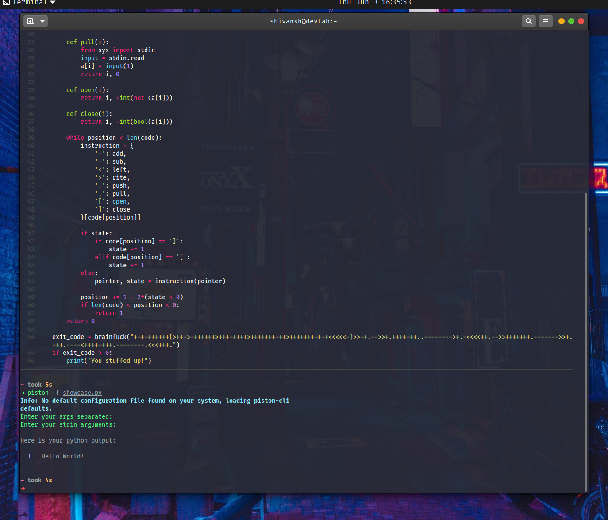

Piston CLI¶
Piston CLI¶


A cli tool which uses the piston api, developed by Engineerman and his team to compile over 35 languages instantly. Accepts files, paste.pythondiscord.com links and input.
Installation¶
With pip¶
$ pip install piston-cli -U
---> 100%
With Nix/NixOS¶
piston-cli is available in nixpkgs through the unstable channels.
You can install it with nix-env, or in a declarative way with configuration.nix or similar.
Flake support¶
piston-cli is a flake, that means you can easily add it to your flake based configuration:
Disclaimer: this also means you're using the development version, you could encounter bugs. If you want to use the stable version, install it from nixpkgs.
{
inputs.nixpkgs.url = "github:nixos/nixpkgs/nixos-unstable";
inputs.piston-cli.url = "github:piston-cli/piston-cli";
outputs = { nixpkgs, piston-cli }:
let
pkgs = import nixpkgs { system = "x86_64-linux"; overlays = [ piston-cli.overlay ]; };
in
{
# use pkgs.piston-cli-unstable here
};
}
For Arch/ArchBased¶
$ yay piston-cli
---> 100%
$ paru piston-cli
---> 100%
Or any AUR helper you use with doesn't matter. You get the point.
Example usage¶
Default¶

Shell¶

File¶

Link¶

Languages¶

Themes¶

How to run it? (Contributing)¶
Make sure you are in the project directory.
$ poetry install
---> 100%
Tip
Run poetry run task precommit to install precommit hooks.
This runs our register pre-commit hooks on every commit to automatically point out issues in code such as missing semicolons, trailing whitespace, and debug statements. By pointing these issues out before code review, this allows a code reviewer to focus on the architecture of a change while not wasting time with trivial style nitpicks.
To run the project, use the (below) in the project root.
$ poetry run task start
---> 100%